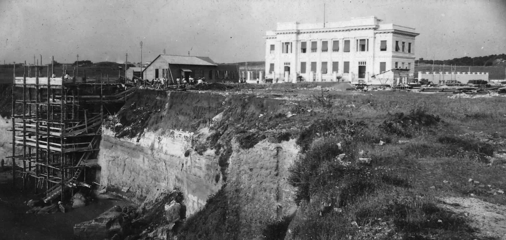
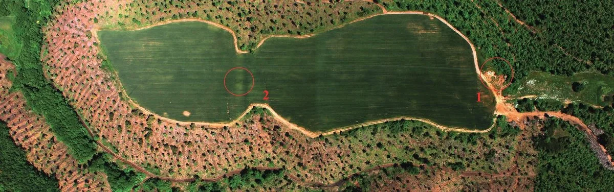
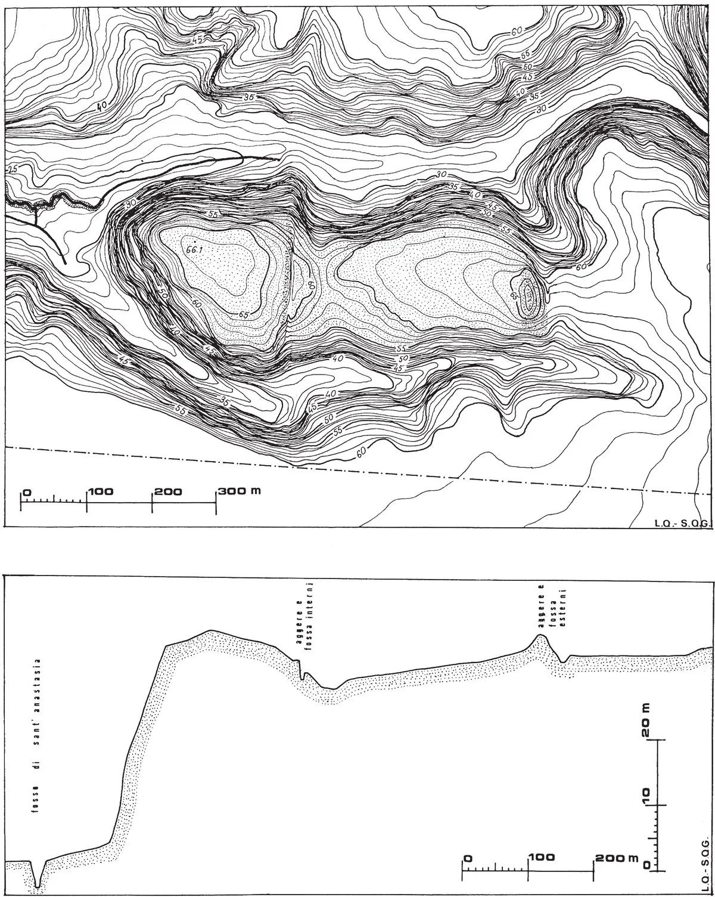

Le radici latine di Anzio, mille anni prima dei Volsci
Dall'età del Bronzo alla prima età del Ferro: Cavallo Morto, Colle Rotondo e la necropoli dell'Italcable. Sotto la città dei Cesari c'è una città molto più antica.
«Altro che Volsci!»
Ugo Antonielli, lettera a Roberto Paribeni, 1925 (in Di Mario–Jaia 2009)
«Altro che Volsci!»
Tra la fine del 1924 e l'inizio del 1925, ad Anzio, si costruiva la stazione dell'Italcable, la compagnia dei cavi telegrafici sottomarini per le Americhe. Quella palazzina oggi è in zona militare: è il Centro Difesa Elettronica. Scavando le fondamenta, dal terreno cominciarono a uscire tombe. A maggio lo scavo passò a Ugo Antonielli, che reggeva il Museo Preistorico Etnografico di Roma, e quello che vedeva lo entusiasmò al punto da scrivere di getto, il 14 maggio, a Roberto Paribeni:
«Chiarissimo Paribeni, altro che elmo di Coriolano! Se c'è un Santo Protettore degli scavi, io sono certamente e bene sotto la sua protezione… Altro che Volsci!»
Ugo Antonielli, lettera a Roberto Paribeni, 1925
Cosa aveva trovato, per esultare così? Tombe dei Latini. Sepolture della cosiddetta facies laziale, la cultura funeraria di quel popolo, le più antiche vecchie di quasi tremila anni: X secolo a.C. I Volsci, che la storia ricorda come padroni di Anzio, non erano ancora arrivati, e mancavano secoli a Coriolano. Anzio non nasce volsca, e nemmeno romana. Nasce latina. Antonielli, sotto le fondamenta di un palazzo del Novecento, ne aveva appena trovato la prova.

Le tombe dell'Italcable, però, non sono le più antiche del territorio. La storia dei villaggi, delle necropoli e delle difese comincia prima, nell'età del Bronzo, nelle campagne a nord-ovest di Anzio. Due nomi: Cavallo Morto e Colle Rotondo.
Cavallo Morto: il primo rogo funebre del Lazio
Nelle campagne tra Lavinio e Campo di Carne, dei lavori agricoli fecero venire alla luce una necropoli, e nel 1981 la Soprintendenza la scavò: una quarantina di urne piene di cenere, tra il XIII e il XII secolo a.C., nel Bronzo Recente, con qualche fibula e qualche rasoio di bronzo. Di chi erano? Probabilmente dei morti di Colle Rotondo, l'abitato a poco più di un chilometro. Ed è, per chi l'ha pubblicata, la più antica necropoli a incinerazione dell'Italia centrale: la prova di un'usanza nuova, bruciare i morti invece di seppellirli.
Colle Rotondo, la seconda città fortificata del Lazio antico
Dal 2009 tre università romane (Roma Tre, La Sapienza, Tor Vergata) hanno scavato il pianoro di Colle Rotondo, in località Sant'Anastasio, campagna dopo campagna. Quello che hanno trovato ha sorpreso tutti. Un muro di terra tenuto in piedi da un'armatura di tronchi, tra il Bronzo Finale e la prima età del Ferro. Il carbonio 14, fatto sui pali di quercia bruciati, dà due risposte: tra l'XI e il X secolo a.C. per alcuni, tra la fine del X e l'inizio dell'VIII per altri. Forse il terrapieno fu alzato in più riprese. Sotto, gli archeologi hanno trovato perfino un villaggio più antico ancora, del Bronzo Medio.
L'area difesa misurava sette ettari e mezzo, una decina di campi da calcio. Se era tutta abitata, nel Lazio antico più grande di così c'era solo il Campidoglio, con i suoi dieci ettari. Poi, in epoca arcaica, qualcuno alzò un secondo muro di terra, più all'interno: due ettari affacciati sul mare, chiusi dentro i sei del terrapieno vecchio. Una città con una doppia cinta, così presto? Qui nessuno se lo aspettava.



All'alba del Ferro: le prime incinerazioni dell'Italcable
Torniamo all'Italcable, alle tombe per cui Antonielli esultò. Le più antiche sono del X secolo a.C., all'alba dell'età del Ferro, e sono incinerazioni. Antonielli le racconta nelle lettere: due tombe a pozzo «con materiale villanoviano-laziale», e il 20 settembre un pozzetto a cremazione «con 6 vasi di corredo, oltre una olla di carattere villanoviano».
Tombe nello stesso posto, per molti secoli
Con l'età del Ferro l'usanza cambia: non si brucia più, si torna a seppellire il corpo intero. Antonielli scavò in due tempi, nel maggio e nel settembre del 1925, con due soli operai e il cantiere che premeva («Il guaio è che qui devono fare presto»): più di trenta sepolture, di tipi ed epoche diverse. Ne pubblicò solo notizie preliminari. Poi andò a dirigere la Soprintendenza del Veneto e della Lombardia, e morì a Padova, all'improvviso, nel 1935. I corredi finirono al Museo Pigorini di Roma tutti insieme, senza più sapere quale oggetto venisse da quale tomba.
Se oggi qualcosa di quel quadro si riesce ancora a ricostruire, è grazie a pochi appunti della seconda campagna e al lavoro paziente di Pär Göran Gierow, che studiò i materiali e pubblicò la necropoli nel 1960, trentacinque anni dopo lo scavo. Anche lui, però, riuscì a ricostruire con certezza il corredo di una sola tomba: la numero XIV. Il resto lo hanno aggiunto le lettere di Antonielli a Paribeni, rimaste inedite in archivio fino al 2009, quando le hanno pubblicate Francesco Di Mario e Alessandro Jaia.
Poi arrivano i Volsci, nel V secolo, e le sepolture non si fermano. Arriva Roma, nel 338, e non si fermano nemmeno allora. Non è una storia senza interruzioni (ci sono riprese, pause, fasi diverse), ma chi abitò qui, volsco o romano, continuò per secoli a portare i suoi morti sullo stesso lembo di costa, fino in piena età romana.
Cronologia protostorica
| Datazione | Sito | Evidenza |
|---|---|---|
| XIII–XII sec. a.C. | Cavallo Morto | Circa 40 urne cinerarie: la più antica necropoli a incinerazione dell'Italia centrale |
| XI–VIII sec. a.C. (C14) | Colle Rotondo | Aggere con armatura lignea di quercia (CEDAD) |
| X sec. a.C. | Necropoli Italcable | Prime incinerazioni |
| VIII sec. a.C. circa | Pianoro di Santa Teresa | Prime opere del vallo urbano (ceramica laziale IIB–III, scavo Guaitoli 1980–81) |
| Dal IX sec. a.C. | Necropoli Italcable | Passaggio a inumazione; uso prolungato per riprese e fasi |
| ~500 a.C. | Tutto il territorio | Occupazione volsca di Antium |
Dove sono finiti i materiali
Se vuoi vedere i corredi dell'Italcable devi andare a Roma, al Museo Nazionale Preistorico Etnografico «Luigi Pigorini», dentro il Museo delle Civiltà. Ad Anzio, a Villa Adele, il Museo Civico Archeologico espone i corredi delle necropoli protostoriche della città, del IX–VIII secolo a.C. E Colle Rotondo? I suoi reperti stanno per lo più nelle università che li hanno scavati.
La tomba della gens Mulakia
E presso il cimitero comunale, lungo la via Nettunense, si apre il sepolcreto a tre celle della gens Mulakia, la tomba della transizione a cavallo della conquista romana del 338 a.C.: né più del tutto volsca, né ancora del tutto romana. Ha una storia troppo grande per queste righe, e la raccontiamo nella scheda a lei dedicata.
La «strada dei marmi» e il veterano di Forum Iulii
Mille anni dopo le prime urne, quella stessa fascia di costa era ancora un grande cimitero. Nell'ottobre del 1877, durante dei lavori vicino alla chiesa di San Biagio, presso Nettuno, saltò fuori un sepolcreto con due lapidi intere e il frammento di una terza.
Il cronista anziate Calcedonio Soffredini ne trascrisse una, «bene incisa e dei migliori secoli dell'impero». Ricordava L. Verazio Afro, venuto da Forum Iulii (più di una città romana portava questo nome). Veterano, decurione e questore di Antio, cioè consigliere della città e responsabile delle sue casse. A seppellirlo furono i suoi eredi, quasi tutti uomini d'armi: un pretoriano, un vigile, uno speculator e un Verazio Certo, legionario.
Soffredini parla anche di una «strada dei marmi» tra Nettuno e Anzio: si chiamava così per i monumenti sepolcrali che la fiancheggiavano, e che alcuni abitanti smontarono per venderne i marmi. A Roma i sepolcri si allineavano lungo le grandi strade che uscivano dalla città; qui, lungo il mare.
Dalle urne al cavo: la stessa costa, fino a oggi
Quel cantiere, del resto, non posava un cavo qualunque. Il 16 marzo 1925 la linea da Anzio a New York entrò in funzione, passando per Malaga e le Azzorre, dove si agganciava al cavo americano. Il 12 ottobre toccò a Buenos Aires, Rio de Janeiro e Montevideo: un collegamento diretto con il Sud America, senza più passare dal Nord. Davanti alla stazione parlò Mussolini, e l'ingegner Giovanni Carosio, il fondatore dell'Italcable, diede il segnale per il telegramma di auguri del re Vittorio Emanuele III ai presidenti di Argentina, Brasile e Uruguay.
La società che lo posò, l'Italcable, aveva un capitale di duecento milioni di lire, e metà lo avevano messo, a piccole quote, gli emigrati italiani dell'America Latina, «desiderosi di comunicare con la Patria lontana»: con le famiglie rimaste a casa.